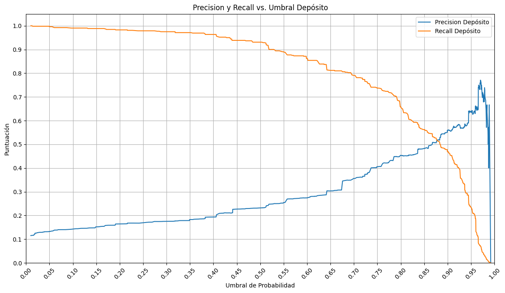

Impulsando la Eficiencia y el Crecimiento en Depósitos Bancarios
El Desafío Actual
Identificar con precisión a los clientes con mayor probabilidad de realizar un depósito a plazo fijo, para:
Maximizar la adquisición de nuevos depósitos.
Optimizar el uso de recursos del equipo de ventas.
Reducir llamadas improductivas y mejorar la experiencia del cliente.
Nuestra Solución: Modelo Predictivo
Hemos implementado un modelo de inteligencia artificial que analiza el comportamiento y las características clave de los clientes.
Este modelo predice la propensión de cada cliente a realizar un depósito, permitiéndonos dirigir nuestras campañas de telemarketing de forma estratégica y eficaz.
¿Qué Buscamos?
Nuestro enfoque con el modelo predictivo se centra en dos objetivos principales:
Priorizar la captación de clientes con alto potencial de realizar un depósito.
Mantener unos estándares de coste-eficiencia, optimizando la inversión en marketing.
Buscamos un balance entre maximizar ingresos y controlar gastos.
Rendimiento Clave del Modelo
Hemos logrado un equilibrio entre capturar oportunidades y maximizar la productividad de nuestro equipo de ventas.
1. Captación de clientes (Recall: 80%)
De todos los clientes que realmente iban a hacer un depósito, nuestro modelo es capaz de identificar y seleccionar a 8 de cada 10 de ellos.
Esto significa que estamos asegurando el 80% de las oportunidades genuinas de negocio.
Rendimiento Clave del Modelo
2. Eficiencia en las Llamadas (Precision: 70%)
De cada 10 llamadas que nuestro equipo de ventas realice (basadas en la recomendación del modelo), 7 de esas llamadas serán a clientes que efectivamente realizarán un depósito.
Esto se traduce en una alta productividad, minimizando el tiempo y esfuerzo dedicado a clientes no interesados.
Curva de Precision y Recall vs Umbral
Esta gráfica nos permite afinar el balance entre captar oportunidades y ser eficientes.

Análisis de Errores: Puntos de Mejora
Nuestro análisis de los Falsos Negativos (clientes que el modelo predijo que NO depositarían, pero SÍ lo hicieron) ha revelado un patrón claro:
El modelo tiende a infravalorar el potencial de clientes sin historial de contacto previo de campaña.
Específicamente, muchos Falsos Negativos corresponden a clientes que no han sido marcados como no contactados previamente y resultado de la campaña anterior desconocido.
Esto indica un área clave para refinar nuestro enfoque y captar aún más oportunidades.
Impacto Directo en el Negocio
Más Depósitos: Capturamos la gran mayoría de clientes con potencial real.
Menos Gastos: Reducimos las llamadas improductivas.
Decisiones Basadas en Datos: Estrategia de marketing dirigida y optimizada.
En esencia, estamos convirtiendo datos en valor tangible para el banco.